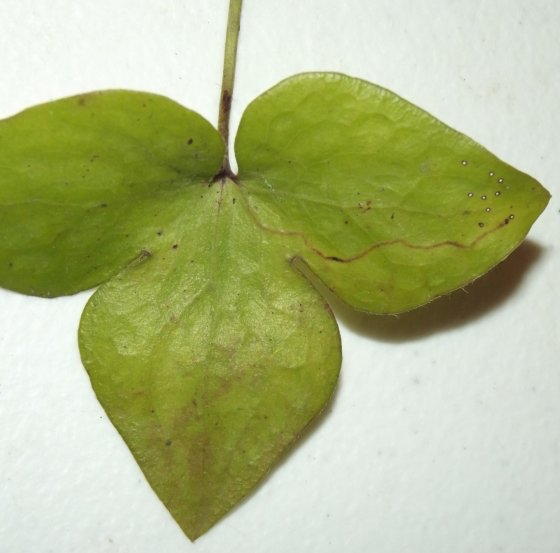
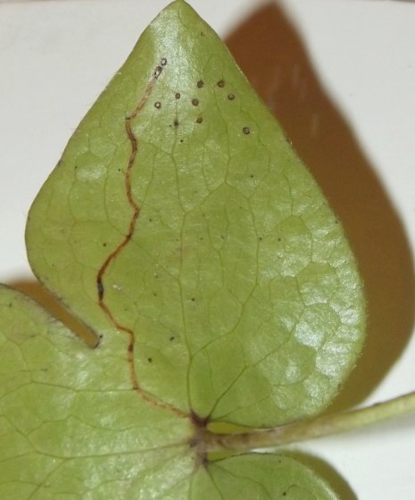
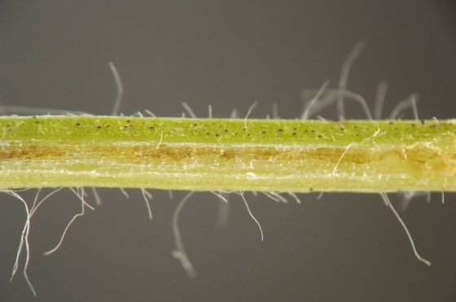
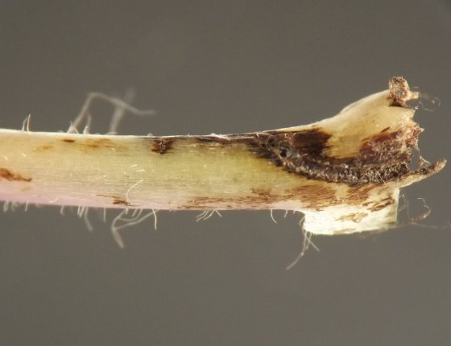

Petiole miner etc. (Diptera: Agromyzidae) in Anemone
| Record no.: | 0055 |
|---|---|
| Feeding guild: | Petiole miner/borer; leaf blade miner; apparent root miner/borer |
| Taxonomy: | Diptera: Agromyzidae |
| Stages observed: | trace |
| Distribution observed: | IA |
| Hosts in Anemone: | A. acutiloba (sharp-leaved hepatica) |
This mysterious insect begins feeding in the leaf blade of hepatica, where it creates a short, linear, dark brown mine that soon enters the petiole. The mine then proceeds straight down the petiole and disappears into the belowground parts of the plant, where the larva presumably does most of its feeding.
Some petioles from affected plants -- including the petiole in which the larva traveled from leaf blade down to the crown of the plant, as well as other petioles from the same plant -- may also contain short, dark brown or blackish tunnels in their very bases at the location where they emerge from the plant crown. These tunnels are much broader and more voluminous than the relatively narrow leaf blade and petiole-length mines, suggesting they are made by the older, larger larva, who must conduct brief excursions into the petiole bases before returning to the belowground parts of the plant.
I located leaf blade and petiole mines in mid-October, but by this time the leaves had already been abandoned by the larvae. The insect is tentatively identified to Agromyzidae based on (1) the presence, in multiple examples examined, of host-feeding punctures in the leaf blade surrounding the start of the mine; and (2) the ragged walls and absence of significant solid frass accumulation in the tunnels in the petiole bases, which together suggest the culprit is a fly. The identification to Agromyzidae should be understood as tentative.
One avenue for future work on this insect could involve determining when the leaf blade and petiole mines are still inhabited and collecting them at this time, which would allow observation of larvae.
Update, 2026: In 2026 I observed relatively fresh mines in new leaves on or about May 30. The larvae (not observed) had already entered the petioles. I also checked some (not all) spring and early summer photos of hepatica plants posted by other workers on iNaturalist for traces of this insect, including mines and host-feeding punctures. That search turned up the following results in hepatica observations made from 2019-2026 (organized chronologically by month and day):
| Month & day | Year | Country | State / province | Trace1 | Citation |
|---|---|---|---|---|---|
| 09 May | 2026 | USA | MN | P | Username ms_le 2026 |
| 16 May | 2026 | USA | MN | P | Peterson 2026 |
| 22 May | 2021 | USA | IA | P | Dirks 2021 |
| 26 May | 2025 | USA | MN | P | Okeefe 2025, Okeefe 2025b, Okeefe 2025c |
| 26 May | 2025 | CA | ON | P | Sulej 2025 |
| 27 May | 2023 | USA | IN | M | Kubley 2023 |
| 27 May | 2026 | USA | NC | P | Prater 2026 |
| 28 May | 2022 | USA | WI | M, P | Username brandino 2022 |
| 29 May | 2022 | USA | IL | P | Stauffer 2022 |
| 31 May | 2025 | CA | ON | P | Lowry 2025, Lowry 2025b |
| 04 June | 2024 | USA | MN | M | Okeefe 2024 |
| 22 June | 2019 | USA | MN | P | Bayer 2019 |
| 09 July | 2022 | USA | MN | M, P | Zappa 2022 |
| 1. P = host-feeding punctures (tentatively identified), M = leaf mine | |||||

 Prev
Prev









- Bayer, T. 2019. Sharp-lobed Hepatica (Hepatica acutiloba). Contributor post on iNaturalist.org. Retrieved October 26, 2026 from https://www.inaturalist.org/observations/27460306.[return to in-text citation]
- Dirks, E. 2021. Sharp-lobed Hepatica (Hepatica acutiloba). Contributor post on iNaturalist.org. Retrieved October 26, 2026 from https://www.inaturalist.org/observations/79870604.[return to in-text citation]
- Kubley, C. 2023. Sharp-lobed Hepatica (Hepatica acutiloba). Contributor post on iNaturalist.org. Retrieved October 26, 2026 from https://www.inaturalist.org/observations/164132408.[return to in-text citation]
- Lowry, J.S. 2025. Sharp-lobed Hepatica (Hepatica acutiloba). Contributor post on iNaturalist.org. Retrieved October 26, 2026 from https://www.inaturalist.org/observations/285949432. [return to in-text citation]
- Lowry, J.S. 2025b. Sharp-lobed Hepatica (Hepatica acutiloba). Contributor post on iNaturalist.org. Retrieved October 26, 2026 from https://www.inaturalist.org/observations/285949440. [return to in-text citation]
- Okeefe, E. 2024. Sharp-lobed Hepatica (Hepatica acutiloba). Contributor post on iNaturalist.org. Retrieved October 26, 2026 from https://www.inaturalist.org/observations/220557020.[return to in-text citation]
- Okeefe, E. 2025. Sharp-lobed Hepatica (Hepatica acutiloba). Contributor post on iNaturalist.org. Retrieved October 26, 2026 from https://www.inaturalist.org/observations/286516153. [return to in-text citation]
- Okeefe, E. 2025b. Sharp-lobed Hepatica (Hepatica acutiloba). Contributor post on iNaturalist.org. Retrieved October 26, 2026 from https://www.inaturalist.org/observations/286692611. [return to in-text citation]
- Okeefe, E. 2025c. Sharp-lobed Hepatica (Hepatica acutiloba). Contributor post on iNaturalist.org. Retrieved October 26, 2026 from https://www.inaturalist.org/observations/286695589. [return to in-text citation]
- Peterson, J.L. 2026. Sharp-lobed Hepatica (Hepatica acutiloba). Contributor post on iNaturalist.org. Retrieved October 26, 2026 from https://www.inaturalist.org/observations/362241264.[return to in-text citation]
- Prater, B. 2026. Sharp-lobed Hepatica (Hepatica acutiloba). Contributor post on iNaturalist.org. Retrieved October 26, 2026 from https://www.inaturalist.org/observations/365916768.[return to in-text citation]
- Stauffer, J. 2022. Sharp-lobed Hepatica (Hepatica acutiloba). Contributor post on iNaturalist.org. Retrieved October 26, 2026 from https://www.inaturalist.org/observations/123744025.[return to in-text citation]
- Sulej, E. 2025. Sharp-lobed Hepatica (Hepatica acutiloba). Contributor post on iNaturalist.org. Retrieved October 26, 2026 from https://www.inaturalist.org/observations/368636118.[return to in-text citation]
- Username brandino. 2022. Sharp-lobed Hepatica (Hepatica acutiloba). Contributor post on iNaturalist.org. Retrieved October 26, 2026 from https://www.inaturalist.org/observations/119138135.[return to in-text citation]
- Username ms_le. 2026. Sharp-lobed Hepatica (Hepatica acutiloba). Contributor post on iNaturalist.org. Retrieved October 26, 2026 from https://www.inaturalist.org/observations/360794482.[return to in-text citation]
- Zappa, R. 2022. Round-lobed Hepatica (Hepatica americana). Contributor post on iNaturalist.org. Retrieved October 26, 2026 from https://www.inaturalist.org/observations/125538440.[return to in-text citation]
Page created: October 12, 2025. Last update: October 26, 2026